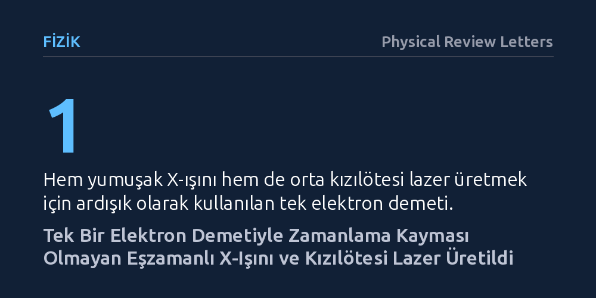

FIZIK · Physical Review Letters · 2026-10-27
Malzeme dinamiklerini inceleyen ultra hızlı deneylerdeki zamanlama kayması sorununu aşmak için tek bir elektron demetinden iki farklı lazer üretimi denendi. Araştırmacılar, tek bir elektron demetiyle hem yumuşak X-ışını hem de orta kızılötesi lazer darbelerini zaman kayması olmadan eşzamanlı üretti.
Farklı lazer kaynaklarını dışarıdan eşleştirmeye gerek kalmadan, tek bir demet sayesinde atom ve moleküllerin ultra hızlı hareketleri zamanlama hatası olmadan izlenebilecek.

Malzemelerin ve kimyasal bağların femtosaniye (saniyenin katrilyonda biri) ölçeğindeki ultra hızlı hareketlerini izlemek için "pompa-sonda" adı verilen spektroskopi yöntemleri kullanılır. Bu yöntemde ilk ışık darbesi malzemeyi uyarırken, hemen ardından gelen ikinci darbe meydana gelen değişimleri kaydeder. Özellikle atomik yapıyı doğrudan gösteren X-ışınları ile moleküler titreşimleri ve elektron hareketlerini tetikleyen kızılötesi ışınların birlikte kullanılması, katı hal fiziğinde ve yeni nesil malzemelerin anlaşılmasında kritik bir öneme sahiptir.
Ne var ki mevcut laboratuvar düzeneklerinde bu iki farklı ışığı bir araya getirmek son derece zordur. Genellikle bağımsız bir dış kızılötesi lazer kaynağı ile devasa X-ışını serbest elektron lazeri eşleştirilmeye çalışılır. Ancak bu iki ayrı kaynağın tetiklenme anları arasında "zamanlama kayması" (jitter) kaçınılmazdır. İki darbe arasındaki zaman farkı mikroskobik düzeyde bile kaydığında, deneyin hassasiyeti kaybolur ve süreçleri net bir şekilde görüntülemek imkânsız hale gelir.
Araştırmacılar bu zamanlama karmaşasını çözmek için iki bağımsız kaynak kullanmak yerine, her iki lazer darbesini de tamamen aynı elektron demetinden üretmeyi hedefledi. Deneyde, hızlandırıcıda özel olarak hazırlanmış ve mikro gruplar halinde düzenlenmiş tek bir elektron demeti kullanıldı. Bu demet, sırasıyla iki farklı manyetik yapıdan geçirildi.
Düzeneğin ilk aşamasında elektron demeti bir yumuşak X-ışını salındırıcısından geçti. Burada elektronlar manyetik alanlar arasında salınarak yüksek enerjili X-ışını üretti. Hemen ardından gelen ikinci aşamada ise aynı demet, bir orta kızılötesi yükselticiye yönlendirildi. Böylece iki farklı dalga boyundaki ışığın, aynı elektron kümesinden ardışık olarak doğması sağlandı.
Yapılan deneyler, bu ardışık sürecin yalnızca çalışmakla kalmayıp şaşırtıcı bir sinerji oluşturduğunu gösterdi. Elektron demetine baştan verilen periyodik kızılötesi yoğunluk modülasyonu, ilk aşamada üretilen yumuşak X-ışını darbesinin darbe enerjisini belirgin şekilde artırdı.
Daha da önemlisi, şiddetli X-ışını üretimi sürecinden geçen elektron demeti dağılmadı; taşıdığı periyodik yapıyı başarıyla koruyarak ikinci aşamada yüksek güçlü ve dar bantlı orta kızılötesi lazer üretmeyi başardı. Araştırmacılar frekansı daha düşük terahertz seviyelerine çekmeyi denediklerinde X-ışını gücünün bir miktar azaldığını gözlemledi; ancak bu durum hızlandırıcı ayarlarının hassas şekilde optimize edilmesiyle dengelendi.
Bu deneyin ortaya koyduğu en temel kazanım, "kendiliğinden eşzamanlılık" oldu. Her iki lazer darbesi de tam olarak aynı elektron demetinden türediği için, darbeler arasındaki zaman farkı sabit ve kararlı kaldı. Dış lazer tetikleyicilerinde yaşanan rastgele zamanlama kaymaları tamamen ortadan kalktı.
Geliştirilen bu yöntem, hem X-ışınıyla uyarıp kızılötesiyle okunan hem de kızılötesiyle uyarılıp X-ışınıyla görüntülenen karmaşık deneyler için son derece güvenilir bir zemin sunuyor. Kuantum malzemeler, kimyasal tepkime ara basamakları ve süperiletkenlik mekanizmaları gibi kritik süreçler, artık zamanlama belirsizliği olmadan çok daha berrak incelenebilecek.